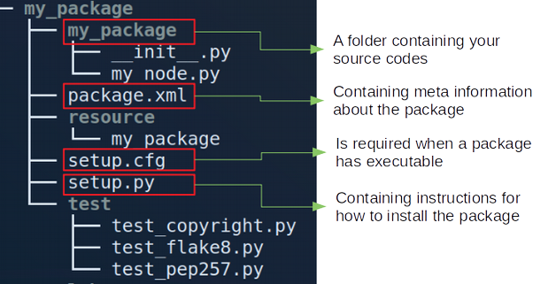

layout: true <div class="header"><img src="https://rosin-project.eu/wp-content/uploads/rosin_ack_logo_wide.png" style="background-color:transparent"/></div> <div class="footer"><img src="https://www.ipa.fraunhofer.de/content/dam/ipa/ipa.svg" /><p>© Fraunhofer IPA</p></div> <div class="triangle"></div> --- class: center, middle name: main_title # ROS-I Academy Training ### ROS 2 Filesystem --- <!-- ROS as a meta-operating system, since it offers not only tools and libraries but even OS-like functions, such as hardware abstraction, package management, and a developer toolchain. Like a real operating system, ROS files are organized on the hard disk in a particular manner, --> ## Overview - What is a package? - How does the structure of workspace look like?  - How to create workspace and packages? --- <!-- A workspace is a folder where you modify, build, and install packages --> ## Package - The software in ROS 2 is organized into **packages** - The smallest build part in ROS 2 - Dedicated to one functionality, e.g. : - Hardware driver - Algorithm - Visualization tool - Library ... - Packages can be grouped to metapackages (e.g [navigation2](https://github.com/ros-planning/navigation2/blob/main/navigation2/)) - references one or more related packages - only contain execution dependencies - beneficial for release and version control <!-- Metapackages can still exist as regular packages that only contain runtime dependencies. When migrating metapackages from ROS 1, simply remove the <metapackage /> tag in your package manifest. --> --- ## Package install options | Debian Package | Source Repositories | | ---------------| ------------------- | | Automatic installation | "Latest" code | | Stable versions | Manual compilation | | Prebuilt binaries | Allows code adjustments | --- ## Package installation (Debian) - Debian: ``` $ sudo apt install ros-<distro>-package-name ROS ROS distribution package name ``` example: ``$ sudo apt install ros-foxy-nav2-core`` **!** package_name: **nav2_core** --> install:ros-foxy-**nav2-core** - Automatic installation - Location : /opt/ros/`<distro>`/... - installs all required dependencies --- <!--underscore--> ## Package installation (Source) - Download from source (usually git): - Do it in your source space (e.g. ~/devel_ws/src): `$ git clone github_link` - example: `$ git clone https://github.com/ros/ros_tutorials.git -b foxy-devel ` - Install all dependencies of package(s) - **rosdep** : download and install dependencies required by ROS packages. ```bash $ rosdep install --from-paths src --ignore-src --rosdistro foxy -y ``` - Manage multiple version-control packages: vcstool - A version control system (VCS) tool - A command-line tool to make working with multiple repositories easier. For example: in your workspace(e.g. ~/devel_ws): ```bash $ wget https://raw.githubusercontent.com/ROBOTIS-GIT/turtlebot3/foxy-devel/turtlebot3.repos $ vcs import src < turtlebot3.repos ``` <!-- - Manual compilation via __colcon__ (explain later) --> <!-- ## Package content ### Python package - `package.xml` - containing meta information about the package - `setup.py` - containing instructions for how to install the package - `setup.cfg` - is required when a package has executables --> <!-- setup.cfg ros2 run can find them https://docs.ros.org/en/foxy/Tutorials/Creating-Your-First-ROS2-Package.html --> --- name: two_columns ## Package content - Folder structure - Python package ``` $ ros2 pkg create --build-type ament_python --dependencies [deps] --node-name my_node my_package ``` <!--  --> <!-- setup.cfg https://docs.python.org/3/distutils/configfile.html tell setuptools to put your executables in lib ros2 run can find it--> <!-- it’s not possible to write down everything needed to build a distribution a priori: you may need to get some information from the user, or from the user’s system, in order to proceed. As long as that information is fairly simple—a list of directories to search for C header files or libraries, f or example—then providing a configuration file, setup.cfg, for users to edit is a cheap and easy way to solicit it. --> <!-- setup.py is the build script for setuptools. It tells setuptools about your package (such as the name and version) as well as which code files to include. --> .cols[ .fifty[  ] .fifty[ Files: * setup.cfg: tell setuptools to put your executables in lib * setup.py: the build script for setuptools ] ] --- ## Package content - Folder structure - CMake package `$ ros2 pkg create --build-type ament_cmake --dependencies [deps] --node-name my_node my_package `  --- ### Package content - `package.xml`  --- ### Package content - `package.xml` - Meta information about the package - Lists dependencies of a package  --- ### Package content - `package.xml` #### Dependencies - Dependencies can be __Other ROS packages__ and __System libraries__ (e.g. `Boost`) - Dependencies: - `<buildtool_depend>`: Required for build tools - `<exec_depend>`: Required at execution-time (e.g. Python script) - `<build_depend>`: Required for building (e.g. rclcpp, ament_cmake) - `<test_depend>` : Required for running unit tests - `<build_export_depend>` : If exported header dependes on other ones - `<depend>` : All-in-one (`<build_depend>`, `<build_export_depend>` and `<exec_depend>`) <!-- *Common parts* for Python and CMake packages - `<exec_depend>`: Required at execution-time (e.g. Python: rclpy, CMake: rclcpp, both: launch, launch_ros) format 3 https://www.ros.org/reps/rep-0149.html Declares a rosdep key or ROS package name - `<test_depend>` : Required for running unit tests (e.g. Python: ament_copyright, ament_flake8, python3-pytest, ament_pep257, CMake: ament_lint_auto, ament_lint_common) - `<depend>` : All-in-one (if all are required) - `<export>` : Additional meta-data in the manifest for other tools that work with packages (e.g. Python: ament_python, CMake: ament_cmake) Only for *CMake packages*: - `<buildtool_depend>`: A tool that is executed during the build process. - `<build_depend>`: Required for building (e.g. rclcpp, ament_cmake) - `<build_export_depend>` : If exported header dependes on other ones --> <!-- ## Package content - `setup.cfg` (Python package) Example (**turtlebot_teleop** package): package path: ~/devel_src/src/turtlebot/turtlebot_teleop  --> <!-- In general: ``` [develop] script-dir=$base/lib/<package-name> [install] install-scripts=$base/lib/<package-name> ``` Example: File Path:~/devel_ws/src/turtlebot3/turtlebot3_teleop/setup.cfg ``` [develop] script-dir=$base/lib/turtlebot3_teleop [install] install-scripts=$base/lib/turtlebot3_teleop ``` --> --- ### Package content - `setup.py` (Python) Example (**turtlebot_teleop** package): package path: ~/devel_src/src/turtlebot/turtlebot_teleop .cols[ .fifty[  ] .fifty[ ``` setup( ... entry_points={ 'console_scripts': [ 'teleop_keyboard = turtlebot3_teleop.script.teleop_keyboard:main' ], }, ) ``` - install the executable **teleop_keyboard** to `devel_ws/install/turtlebot3_teleop/lib/ turtlebot3_teleop/` <!-- So you can find **teleop_keyboard** here : `devel_ws/install/turtlebot3_teleop/lib/turtlebot3_teleop/ teleop_keyboard` --> ] ] <!-- entry_scripts Like the CMakeLists add_executable macro, you can add your python scripts here. --> --- ### Package content - CMakeLists.txt (CMake package) Example:  - Defines build rules. For example: * Declare compilation for executables * How to resolve header files and library references - Mostly CMake, plus ament-specific ones --- CMakeLists.txt Example:  <!-- - Template: * Step 1: ``` cmake_minimum_required(VERSION 3.5) project(my_package_cplusplus) # Default to C99 if(NOT CMAKE_C_STANDARD) set(CMAKE_C_STANDARD 99) endif() # Default to C++14 if(NOT CMAKE_CXX_STANDARD) set(CMAKE_CXX_STANDARD 14) endif() if(CMAKE_COMPILER_IS_GNUCXX OR CMAKE_CXX_COMPILER_ID MATCHES "Clang") add_compile_options(-Wall -Wextra -Wpedantic) endif() ``` - Template: * Step 2: ``` # find dependencies find_package(ament_cmake REQUIRED) ``` * Step 3: ``` add_executable(my_node_cplusplus src/my_node_cplusplus.cpp) ``` Adds an executable target called **my_node_cplusplus** to be built from the source file **src/my_node_cplusplus.cpp** * Step 4: ``` target_include_directories(my_node_cplusplus PUBLIC # defined in "add_executable" $<BUILD_INTERFACE:${CMAKE_CURRENT_SOURCE_DIR}/include> $<INSTALL_INTERFACE:include>) ``` This adds all files in the folder **"your package name"/include** to the public interface during build time. - Template: * Step 5 ``` install(TARGETS my_node_cplusplus EXPORT export_${PROJECT_NAME} DESTINATION lib/${PROJECT_NAME}) ``` install the executable `my_node_cplusplus` to `install/my_package_cplusplus/lib/my_package_cplusplus/` For example you can find this file in this path `devel_ws/install/my_package_cplusplus/lib/my_package_cplusplus/my_node_cplusplus` - Template: * Step 6 ``` ament_package() ``` The project setup is done by **ament_package()** and this call must occur exactly once per package. *Helpful documentation: https://cmake.org/cmake/help/v3.17/* --> --- <!-- ament_cmake User Documentation https://docs.ros.org/en/foxy/Guides/Ament-CMake-Documentation.html --> ### Colcon - a universal build tool - Build system: Operates on a single package - Build tool: Operates on a set of packages <img src=../static/colcon.png alt="drawing" width="500"/> Example: ``` # saves you from having to rebuild every time you tweak python scripts $ colcon build --symlink-install # builds the package you want $ colcon build --packages-up-to <name-of-pkg> ``` **Helpful documentation: https://colcon.readthedocs.io/en/released/user/quick-start.html** <!-- --symlink-install. This allows the installed files to be changed by changing the files in the source space (e.g. Python files or other not compiled resourced) for faster iteration. --> <!-- In the root of the workspace, run colcon build. Since build types such as ament_cmake do not support the concept of the devel space and require the package to be installed, colcon supports the option --> <!-- catkin is based on CMake and provides a set of convenience functions to make writing CMake packages easier. It automates the generation of CMake config files as well as pkg-config files. It additionally provides functions to register different kinds of tests. In ROS 2 a package can be a “vanilla” Python package whereas in ROS 1 any Python functionality is triggered from a CMake file. http://design.ros2.org/articles/build_tool.html --> --- ### Lint tools Lint tools : Static checking of Python or C++ source code for errors and standards compliance. - For Python package - package.xml ``` <test_depend>ament_copyright</test_depend> <test_depend>ament_flake8</test_depend> <test_depend>ament_pep257</test_depend> ``` <!--https://github.com/ament/ament_lint https://docs.ros.org/en/foxy/Guides/Ament-CMake-Documentation.html#linting --> - For CMake package - package.xml ``` <test_depend>ament_lint_auto</test_depend> <test_depend>ament_lint_common</test_depend> ``` `ament_lint_auto`: ament_cmake_copyright, ament_cmake_cppcheck,ament_cmake_flake8, ament_cmake_lint_cmake, ament_cmake_pep257, ament_xmllint `ament_lint_common`: ament_clang_format, ament_clang_tidy, ament_cmake_clang_format, ament_cmake_clang_tidy <!-- - CMakeList.txt ``` find_package(ament_lint_auto REQUIRED) ament_lint_auto_find_test_dependencies() ```--> --- ## Workspace - A directory containing ROS 2 packages with a particular structure - Structure  *__Colcon__* creats __build/__ __install/__ __log/__ as peers of the src/ --- ## Workspace #### Used for Development * Source Space (`src/`): Contains the source version of packages * Build Space (`build/`): Where CMake is invoked and generates artifacts #### Ready for Installation * Install Space (`install/`): Self-contained package ready for release * Package-structure like in /opt/ros/`<distro>` --- ### Environment setup files - Setup file generated at initialization of a workspace: setup.bash, setup.zsh ... - Source your ROS 2 installation workspace before using ROS 2 ``$ source /opt/ros/<distro>/setup.bash `` <!-- Why? ROS relies on the notion of combining spaces using the shell environment. --> - Source your workspace: ``$ source <ws-path>/install/setup.bash `` ** ---> ROS can find and use any resource inside the ROS environment** --- ### Compile workspace Example: * Go to your workspace: `$ cd ~/devel_ws` * Source ROS 2 installation workspace `$ source /opt/ros/foxy/setup.bash ` * Install all dependencies of package(s) `rosdep` : download and install dependencies required by ROS packages. - For the first time, you need to run: ```bash $ sudo rosdep init $ rosdep update ``` * Install all dependencies of package(s) * Then you can use: ```bash $ rosdep install --from-paths src --ignore-src --rosdistro foxy -y ``` * Compile the workspace ```bash $ colcon build --symlink-install ``` - After `colcon build` in your workspace, source ROS env : `$ source <ws-path>/install/setup.bash` (including /opt/ros/`<distro>`/setup.bash) <!-- - Check current env: echo $ROS_PACKAGE_PATH - Source your the ROS 2 installation workspace . We call this environment an *__underlay__* WHY? It provides our workspace with the necessary build dependencies for other packages. give example ROS relies on the notion of combining spaces using the shell environment --> <!-- --skip-keys "console_bridge fastcdr fastrtps libopensplice67 rti-connext-dds-5.3.1 urdfdom_headers" --> <!-- ## Let's Try #### 1. Create new Workspace ``` $ cd ~ $ mkdir -p ~/dev_ws/src $ cd ~/dev_ws/ ``` #### 2. Get packages from github ``` $ cd src # check which folder you are in $ pwd $ git clone https://github.com/ros2/examples -b eloquent # check your folder structure $ tree ``` Check dependencies of this package ``` $ source /opt/ros/eloquent/setup.bash $ rosdep install --from-paths src --ignore-src --rosdistro eloquent -y ``` #### 3. Using colcon to build packages ``` (sudo apt install python3-colcon-common-extensions) $ colcon build --symlink-install # check your folder structure $ tree ``` #### 4. Source the environment ``` $ source install/setup.bash ``` `dev_ws`: will be an __overlay__ on top of the existing ROS 2 installation(__underlay__). #### 5. Try a demo In the same terminal ``` $ ros2 run examples_rclpy_minimal_subscriber subscriber_member_function ``` #### 6.Open another terminal *check if you are in your workspace. If not you need to enter your workspace. If it is you need to source your workspace again:* ``` $ source install/setup.bash $ ros2 run examples_rclpy_minimal_publisher publisher_member_function ``` ### Have a look at packages in this example | Python package | Cmake package | | ---------------| --------------| | setup.py | ------------- | | setup.cfg | CMakelists.txt| | package.xml | package.xml | | source code | source code | --> <!-- https://github.com/ros2/examples --> <!-- ## Let's Try ### Create a package 1. !!! Source your ROS 2 installation. 2. Find or create your workspace 3. Create a package ``` $ cd src $ ros2 pkg create --build-type ament_python --node-name "node name" "package name" ``` 4. Return to the root of your workspace: ``` $ cd .. ``` 5. Build your packages: ``` $ colcon build --symlink-install ``` 6. Source the setup file ``` $ source install/setup.bash ``` 7. Use the package ``` $ ros2 run "package name" "node name" ``` 8. Examine package contents ``` "package name" package.xml resource setup.cfg setup.py test "node name.py" ``` --> <!--The setup.py file contains the same description, maintainer and license fields as package.xml https://docs.ros.org/en/foxy/Tutorials/Creating-Your-First-ROS2-Package.html#what-is-a-ros-2-package --> --- ## Any Questions?